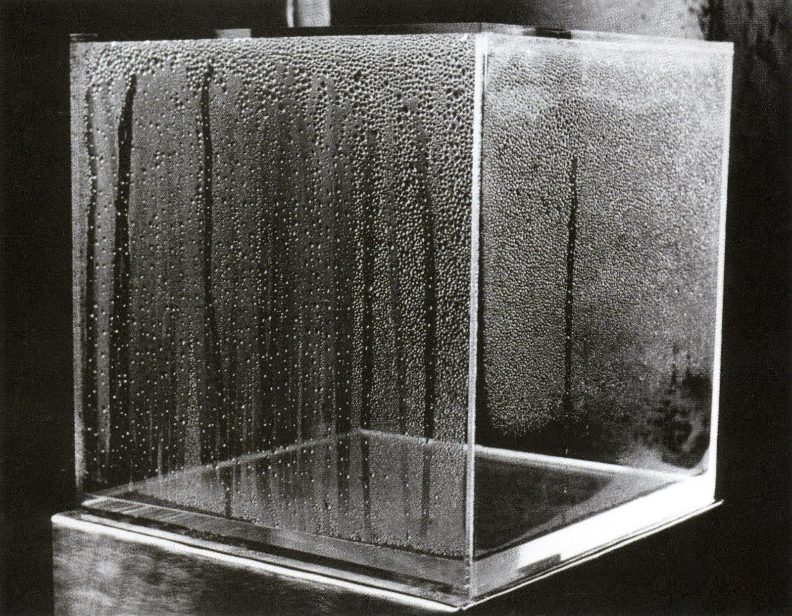
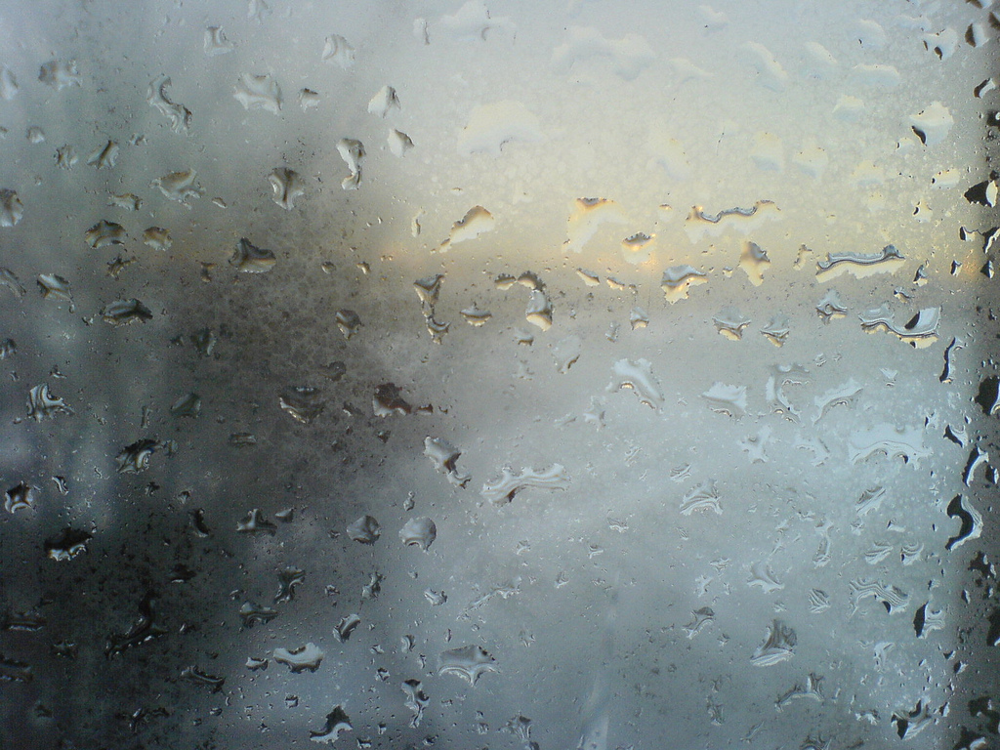

Lodestar—Donald Verry, 2012
Condensation: A Property Damage Culprit in Winter—donan.com

@subwayhands, 2017
Mirror 1—Devon Merlette, 2018

Stephen Cysewski, 2008
Transports—Leo Berne
On the Night Bus—Nick Turpin, 2016

Moisture Wet Window Raining Fog 926141—StockSnap
Steamy Window Mac Wallpaper—allmacwallpaper.com

Mirror 2—Devon Merlette, 2018
Condensation—Crystal Window and Door Systems

City—Ed Ruscha, 1968
Adarsh Gumashta, 2017

shu uemura—Leo Berne, 2017

DSC03290—Andre Peirao, 2007

Mirror 3—Devon Merlette, 2018

Condensation Cube—Hans Haacke, 1965
The Art of Condensation I—Thomas Regner, 2007

El rincon de Liumeg, 2012

Fog on the Window—Kevin Callahan, 2010
Man drawing two hearts on the car window—Videoblocks
Condensation (morning)—Mary Hutchinson, 2010
Jar—Devon Merlette, 2018
Creating a Raindrop Shader in Cinema4D—cgterminal.com

Beweiskette—Garry Disher, 2009
Why do my car's mirrors fog up?—Cars.com, 2017